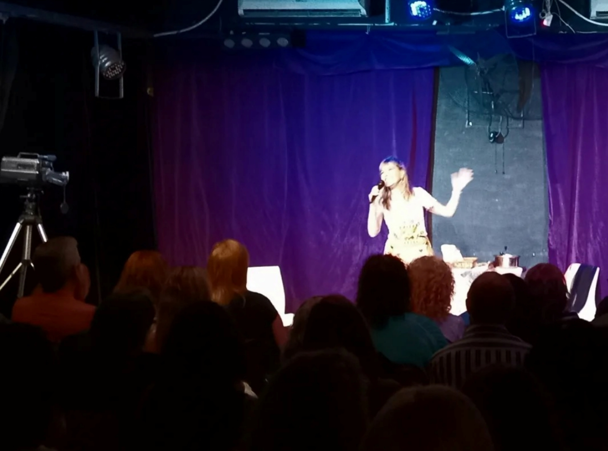
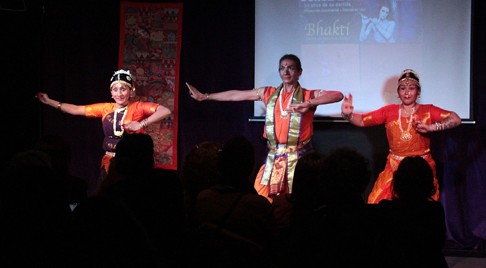
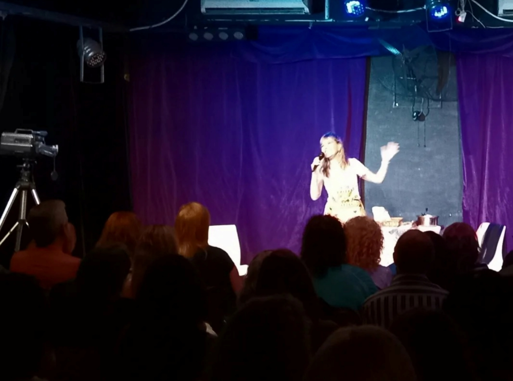
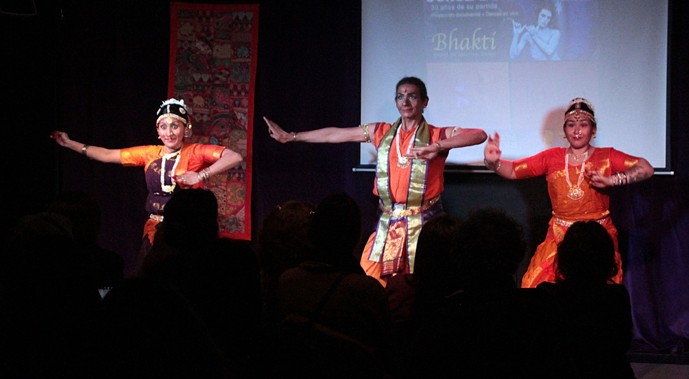

Gestionado por su hermana melliza Delia Donn y Héctor Marciano Rodríguez
Contáctanos por WhatsApp"Celebramos su vida y arte"
El proyecto cultural nace como homenaje a la vida y obra de Jorge Donn, bailarín argentino-internacional y figura clave en el ballet contemporáneo.
Ubicado en el corazón de Palermo, este espacio busca ser un punto de encuentro artístico para la comunidad local e internacional. Ofrecemos talleres, presentaciones audiovisuales mensuales, y un lugar para la creación cultural independiente.
Nuestro objetivo es promover el teatro independiente, la danza y otras expresiones artísticas con identidad barrial y latinoamericana.

Algunos momentos especiales vividos en nuestro espacio cultural en Palermo:

 



Primer sábado de cada mes proyectamos documentales y entrevistas sobre la vida de Jorge Donn y Maurice Béjart, seguidas de charlas abiertas con artistas y docentes invitados.

Te dejamos algunas fechas importantes de nuestros talleres y proyecciones:
Profundiza en la vida y obra de uno de los bailarines más carismáticos del siglo XX:
Conoce su historia desde sus inicios hasta convertirse en estrella mundial de la danza.
Leer BiografíaDescubre cómo fue la vida de Jorge narrada por su hermana melliza, Delia Donn.
Ver en YouTubeDesde una estatua en Montreal hasta un día del bailarín en Argentina.
Ver HomenajesJorge actuó en más de 4 continentes y ante multitudes masivas.
Ver países donde actu칩游늸 Güemes 3825, Palermo, Buenos Aires